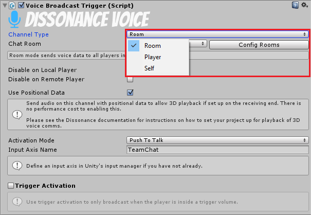
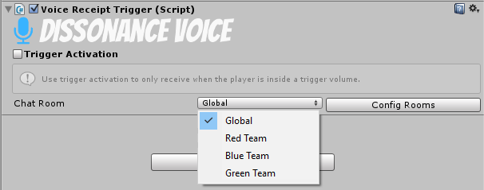

Who Hears Whom?
By default when a player speaks no one one will hear them - before players can communicate you need to set up where to send voice to on the speaking end and where to receive voice from on the listening end. Where to send to is controlled by a "Voice Broadcast Trigger" component and where to receive from is controlled by a "Voice Receipt Trigger" component.
Speech Intent
The "Voice Broadcast Trigger" does not only control who sends to where it also controls when voice is transmitted to the given target. This is referred to as "Activation" and is divided into two further section: does the user want to speak and is the user allowed to speak.
The "Activation Mode" setting on the "Voice Broadcast Trigger" determines how the user indicates if they want to speak, this can be set to: "None", "Voice Activation" and "Push To Talk" (see the Voice Broadcast Trigger reference documentation for further details).
The "Trigger Activation" setting is the setting for if the user is allowed to speak, an associated trigger volume can enable and disable the broadcast as the player moves in and out of the volume. This can be used to create areas in the scene the player needs to stand inside to be heard (e.g. proximity chat).
Sender Target

The broadcast trigger component supports three types of target: Room, Player and Self. The setting for this highlighted in the image above.
Room
When the target of a broadcaster is set to "Room" then the local voice will be sent to the given room. Other players who have subscribed to the same room will hear what is said. If a player is both sending and receiving from the same room they will not hear themselves speaking.
Player
When the target of a broadcaster is set to "Player" the the local voice will be sent only to the player specified by the "Recipient Player Name" field. The receiving player will automatically receive this without setting up a "Voice Receipt Trigger".
Self
When the target of a bradocaster is set to "Self" the broadcaster will look for a "Dissonance Player" component attached to the same game object and will send the local voice to the player represented by that component. This is equivalent to the player mode. The receiving player will automatically receive this without setting up a "Voice Receipt Trigger".
Receiver

If the sending target is "Player" or "Self" then the receiving player automatically hears anything transmitted to them. However this is not the case for rooms, receiving players need to subscribe to rooms they wish to listen to, this is controlled by the "Voice Receipt Trigger". When the trigger component is activated voice will be received from the given room.
Specific Setups
This system of broadcasters and receivers is very flexible and allows for a variety of different setups. This documentation includes some specific examples but if you have a specific design in mind which is not covered here feel free to raise an issue or discuss it with the community.